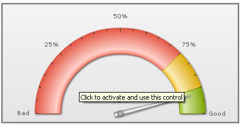

Creating your First Chart > Using HTML code to embed charts |
In our previous method, we had used FusionCharts JavaScript class to embed the chart. This method is the recommended method for embedding any chart/map from FusionCharts suite. However, if for some reason you do not wish to use the JavaScript class to embed the charts, you can do so using direct HTML code too. Shown below is an example of embedding the same angular gauge using HTML this time, instead of JavaScript. This page is saved as HTMLEmbed.html in MyFirstChart folder. |
<html> |
In the above code, we've
|
To display a Flash movie correctly in a browser, HTML page should contain specific tags that specify the Flash movie file to be opened and played. There are two tags which are intended for it: <OBJECT> and <EMBED> tags. These two tags are required to display a Flash movie in different Internet browsers properly. The <OBJECT> tag is used by Internet Explorer under Microsoft Windows and the <EMBED> tag is used by Netscape Navigator under Microsoft Windows or Mac OS. Each of these two tags acts in the same way, however using only one tag may cause incompatibility of one of the browsers. To ensure that most browsers will play your Flash movies, you should place the <EMBED> tag nested within the <OBJECT> tag as shown in the example. ActiveX-enabled browsers will ignore the <EMBED> tag inside the <OBJECT> tag. Netscape and old Microsoft browsers will not recognize the <OBJECT> tag and will use only the <EMBED> tag to load the Macromedia Flash Player. |
When you now view your chart, you'll see it as before. However, with the recent updates in the way Internet Explorer handles ActiveX Object (Flash is ActiveX Object), end users would first be required to click the chart to activate it, as shown below. |
|  |
Until the user clicks the chart, he wouldn't be able to interact with the chart i.e., the tool tips and links won't function. This can sometimes be misleading when you've links in your chart. To overcome this, you'll have to necessarily use the JavaScript embed method. |